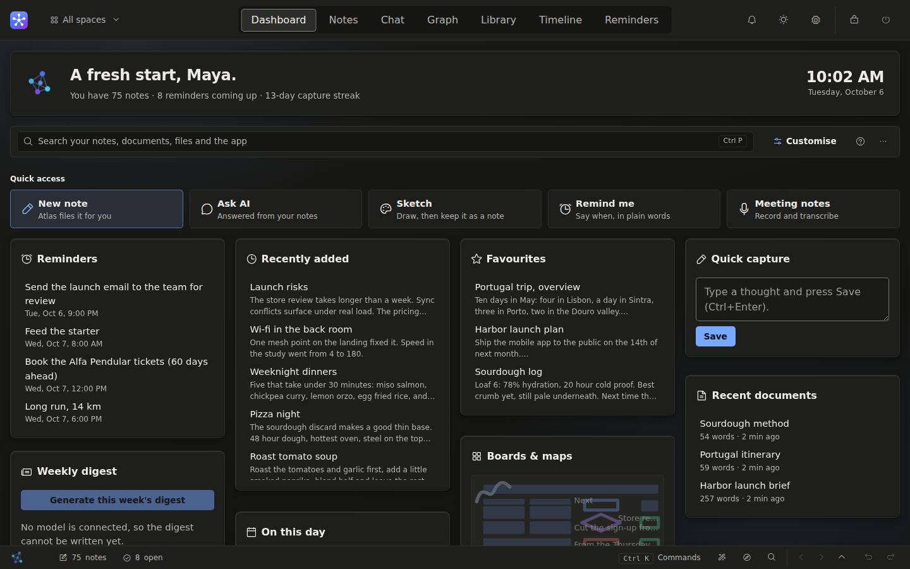
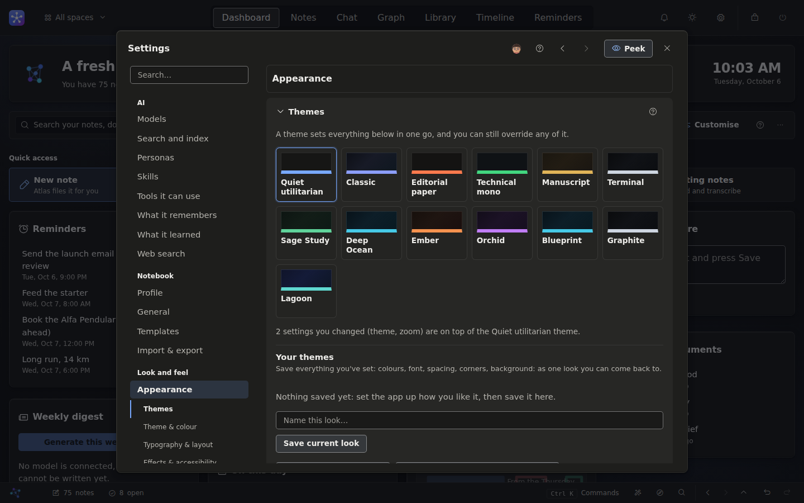
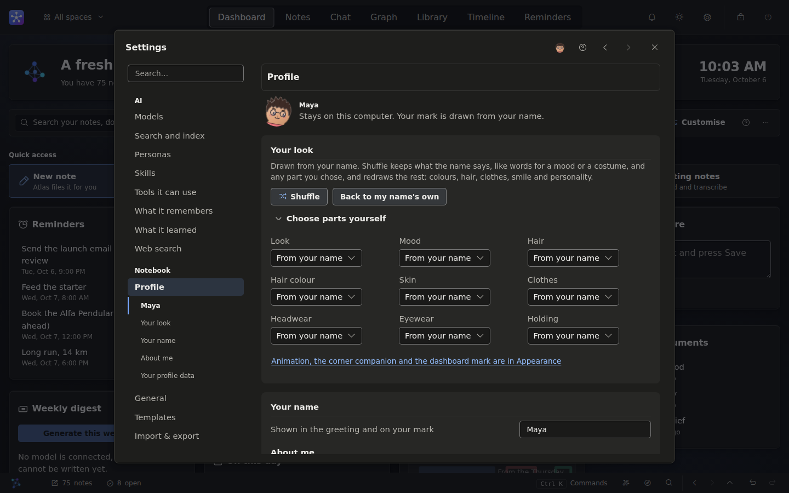
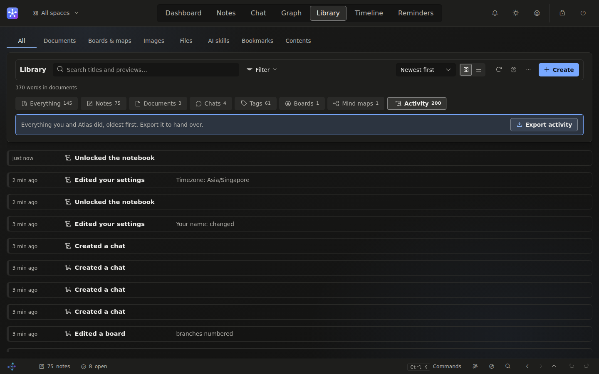

Capture
Type, paste, draw, dictate or import. A quick note opens over any tab with Alt+N. Markdown, #tags and [[wiki links]] work as you type, and voice is transcribed on your machine.
Local-first, offline, open source
MemoryMap AI is a fully offline, local-first notebook where a local AI files your notes and answers questions about them. Write a thought and it is filed, tagged and linked to what you already wrote. Ask a question and get an answer beside the notes it came from, with each sentence cited so you can check it.

The core loop
Most notebooks leave the filing to you. MemoryMap reads each note as you save it, decides where it belongs, and turns your notes into something you can question.
Type, paste, draw, dictate or import. A quick note opens over any tab with Alt+N. Markdown, #tags and [[wiki links]] work as you type, and voice is transcribed on your machine.
A local model picks a category by meaning, suggests tags and links the note to the ones it relates to, showing how sure it was. Keep each suggestion with one press, or file by hand.
Ask in plain English. The answer comes back beside the notes it was built from, with a numbered citation after each sentence, so you never have to take it on trust.
capture a thought Atlas files it ask a question an answer, with the notes behind it
Feature tour
Around the core loop sit a long-form editor, boards and mind maps, a graph of how your notes connect, a timeline, reminders, and Atlas, an assistant that can act on the notebook for you.
Notes
Notes are captured, filed into a category, tagged and linked to what they relate to, so a loose thought lands next to its neighbours without you lifting a finger.

Ask
Ask your own notes a question and get a conversational answer with a numbered citation to the note behind each sentence. The matching notes sit beside it, so checking takes a glance.

Chat and agent mode
Chat is saved and resumable. Switch on agent mode and Atlas can search, link, organise, set reminders and build boards for you, with every step shown as it happens.

Graph
The graph draws your notes as a map coloured by category. Dense clusters, loose webs and notes on their own are visible at once, and every link carries the reason it was made.

Documents
A proper editor for the things that outgrow a note, with Live, Source, Split and Read views. Spelling and grammar checks run on your computer, and a document reopens where you left it.

Boards and mind maps
Boards hold cards, sketches, images and shapes that contain text, joined by connectors that carry a label. Turn a board into a mind map with numbered branches, topics that are tasks, and a note behind any topic.


Atlas
Atlas is the star spirit behind the filing, the answers and the agent. Keep it in the corner of any page, or choose yourself, a persona or a character of your own, each with a drawn face.
Ctrl+Shift+AOn a phone
The server listens on your computer only. Switch on access for your own network in Settings and a phone or tablet can open it, always behind your password and over HTTPS. The layout becomes one column, with the tabs at your thumb.


Every note and reminder on a time axis, placed by what it is about when a note names a date.

Notes, documents, chats, boards, files and bookmarks in one place, with an activity log of what you did.

Type “call Sam tomorrow evening” and it is scheduled, with priority, repeats and snooze.

Ctrl+K reaches any command, note, document, file or board from anywhere.

Ask Atlas to capture, find, summarise or remind without leaving the page you are on.

The page and nothing else, with the writing checks beside it when you want them.

Themes in light and dark, your own accent, type, density and corners, and a search across every setting.

A face drawn from your name for you and every persona, and every part of it yours to change.

A plain record of what you and Atlas did, one line each, newest first.
Privacy and offline
MemoryMap is built for the things you would not paste into a website. There is no service behind it: the app, the AI and your notes all run on your own computer.
Nothing to sign up for. The password you choose on first launch protects the app on your computer and never goes anywhere.
The app does not report what you do, how often, or anything else. There is no analytics and no crash reporting service.
Your notes are a single SQLite database beside your uploads and a daily backup. Copy the folder and you have copied everything.
Web search and the update check are off until you turn them on, and web search sends only your search words. Settings, Privacy lists every connection the app has made.
Mark a note private and it is encrypted at rest with a key derived from your password, and kept out of search, the graph and every AI tool.
Without a model, notes are filed as Uncategorised, search uses full-text matching with stemming and spelling correction, and every other feature keeps working.
Install
Pick the way that suits you. Only running from source needs a terminal, and the launcher does the setup for you.
Download MemoryMap-AI-Setup-*.exe from the latest release and run it. The app opens in its own window.
Windows may show a “protected your PC” screen because the installer is not code-signed yet. The install guide shows what to click.
Windows installer guideDownload MemoryMap-AI-*-linux-x86_64.tar.gz from the same page, unpack it and run MemoryMap AI.
tar -xzf MemoryMap-AI-*-linux-x86_64.tar.gzThe window needs GTK and WebKit, which most desktops already have.
Linux package guideClone the repository and run the start script. It builds a private Python environment, installs everything and opens the app.
git clone https://github.com/Braydenh563/MemoryMap-AI.git
cd MemoryMap-AI
./start-desktop.shUse ./start.sh for a browser tab instead of a window. On Windows the same scripts are start-desktop.bat and start.bat. Add --doctor to check the machine and print a fix for each problem.
Search by meaning uses a built-in model that the app fetches the first time it is needed, a one-time download. Settings, Search and index says when it is running. Updating and uninstalling are covered in the install guide, and common problems in troubleshooting.
Models
MemoryMap talks to a model running on your own computer or network. Pick one that fits your machine, from a laptop with no GPU upwards, and change it any time in Settings, Models.
The simplest route. Install Ollama, pull a model that suits your hardware, and choose it in Settings, Models. The model guide suggests one for each size of machine.
Anything that serves the OpenAI API works too: llama.cpp’s llama-server, LM Studio, Jan and vLLM. Enter the address in Settings, Models, Model backend and press Connect; no restart.
Choose a model for your machine Using a server other than Ollama
FAQ
Yes. MemoryMap AI is free and open source under the GNU Affero General Public License. You may use, study, modify and share it, and anything built on it stays under the same licence.
No. The app itself is light, and small models run on an ordinary laptop with no GPU. A bigger model gives better answers if your machine can hold one; the model guide suggests one for each size of machine.
Yes. With no model, notes are filed as Uncategorised, tags are suggested from similar notes, search uses full-text matching with stemming and spelling correction, and documents, boards, mind maps, the graph, the timeline and reminders all keep working.
In one folder on your computer: a single SQLite file for your notes, your uploads, your preferences, and a daily backup. You can move the folder anywhere, and export everything as JSON, CSV or Markdown, or as a password-sealed backup.
Only what you switch on. Web search and the update check are off by default, a model address that is not local is refused unless you allow it, and Settings, Privacy lists every connection the app has made. There is no telemetry.
Yes, from your own network. The server listens on your computer only until you switch on network access in Settings, Account & security. A phone then opens it in its browser, behind your password and over HTTPS.
Yes. It imports folders of Markdown, PDF, Word and slide decks, and exports from Notion, Obsidian, Evernote and Apple Notes. Importing the same thing twice adds only what is new.
The installer is not code-signed yet, so Windows SmartScreen shows a “protected your PC” screen the first time. The install guide shows exactly what to click, and the source for every build is on GitHub.
Open an issue on GitHub for bugs and ideas. For a vulnerability, follow the security policy rather than opening a public issue.